App screens use a demo account. The numbers are made up, the app is real.
Free · Windows 10 / 11
Your silver per hour, counted live.
It reads only the drop logs on your screen while you play and prices every drop, plus more!
- Reads
- Drop logs
- CPU usage
- Low ~25% of 1 core
- Price
- Free
What it tracks
- Grinding
- Hunting
- Gathering
- Cooking
- Alchemy
Co-Owner
AionJanis is now co‑owner.
Janis has been running the tracker on stream, catching what breaks and telling his chat it's safe to use. Most of you found it through him.
Now it's official. The tracker carries his name, and he has a real say in what gets built next. Same free app, same Discord.
What sits on your screen
A small window next to your game. Start a session and it fills in as drops land.
GameItem was obtained. [Twilight of the End – Earring]
TrackerBig drop 550.00M · session 6.23B → 6.70B
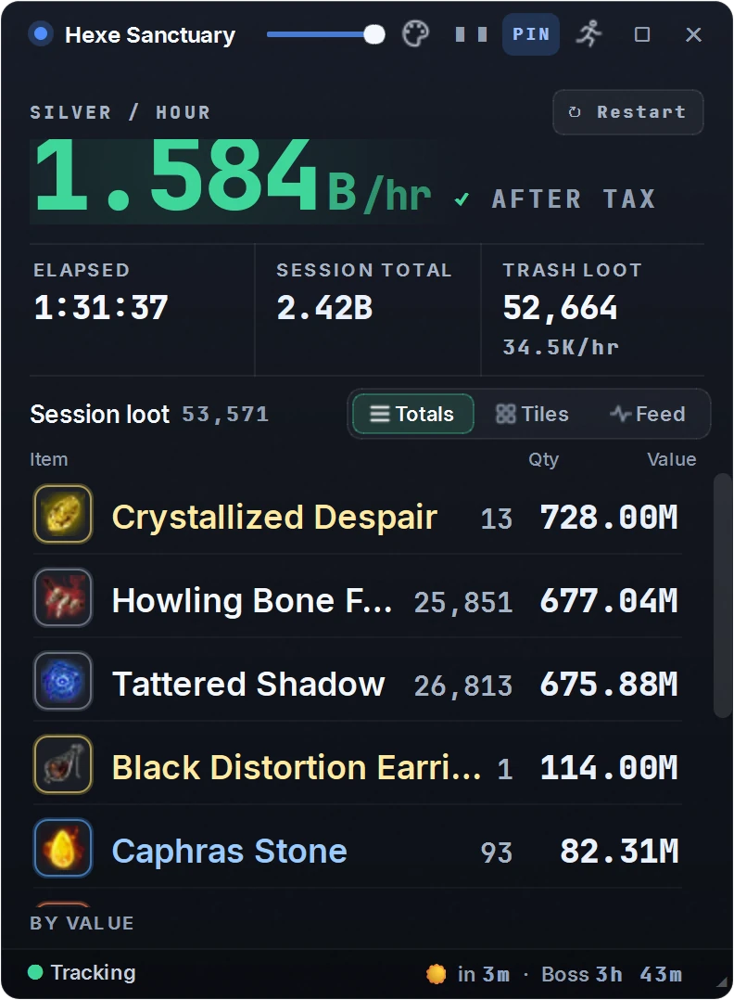
-
Silver per hour, after tax
Priced from your region's Central Market after your own marketplace tax, so the number is what you actually take home.
-
Every item, valued
Trash, rares and everything in between, sorted by what it's worth. Counts it isn't sure of get a ≈ so you can check them.
-
Big drops get called out
When something expensive lands, a card pops up with its value.
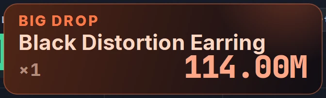
-
Stays out of your way
Pick one of seven themes, fade the background, pin it on top, or shrink it to a single strip.
Every session, saved on your PC
Every run lands in History with its post-tax silver, silver per hour and trash per hour. Search by spot, run name or an item that dropped, and open any run to see everything it made. Insights charts your rate over time and ranks your spots.
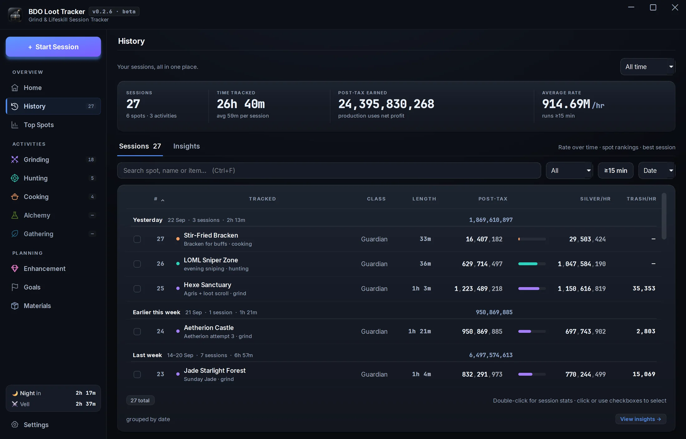
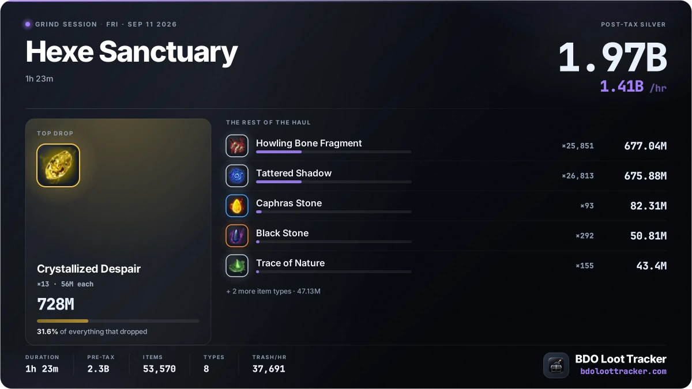
Good hour? Post it.
Every session makes a Loot Card. Copy it and paste it straight into Discord, or save it as an image.
Plan your next upgrade
The tools you open between sessions.
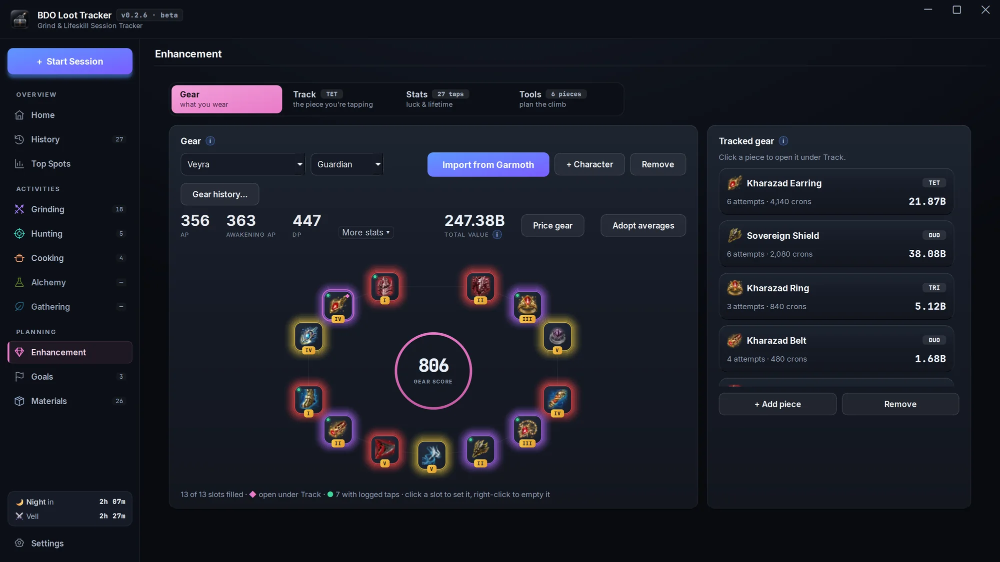
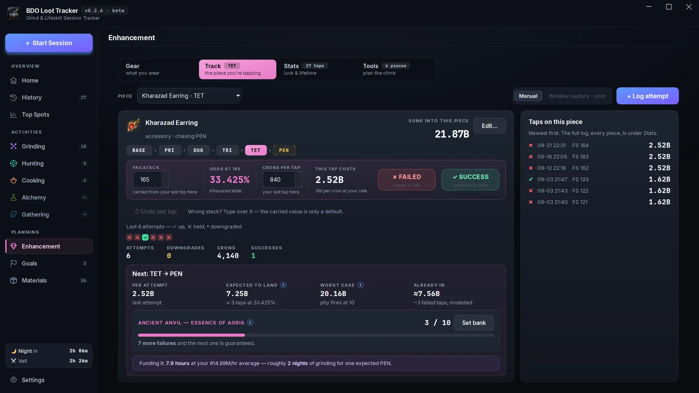
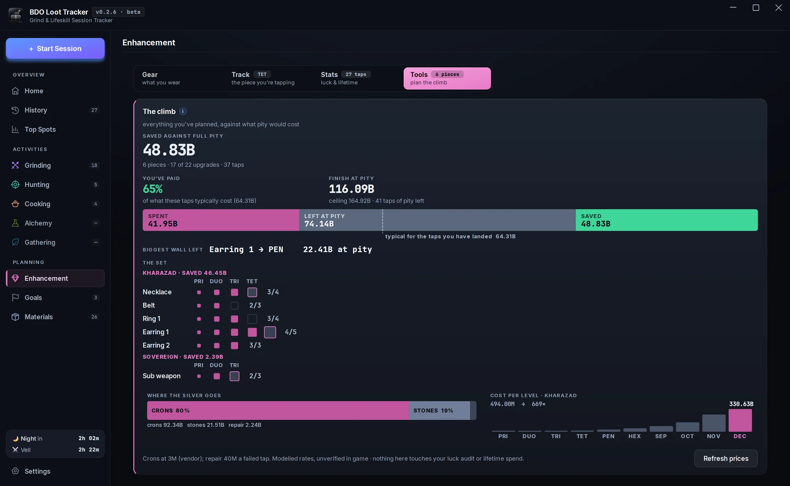
Log every tap and see what your luck really cost
Log a tap with one click. The tracker carries your failstack, shows the odds and what the tap costs at your cron price, counts your Ancient Anvil pity, and tells you whether you've really been unlucky.
- Your gear laid out like the game's window, with gear score and total value. Import it from Garmoth.
- A luck audit: where you rank against players on the same odds, and what that luck cost in silver.
- The climb planner prices your whole path against full pity, no logging needed.
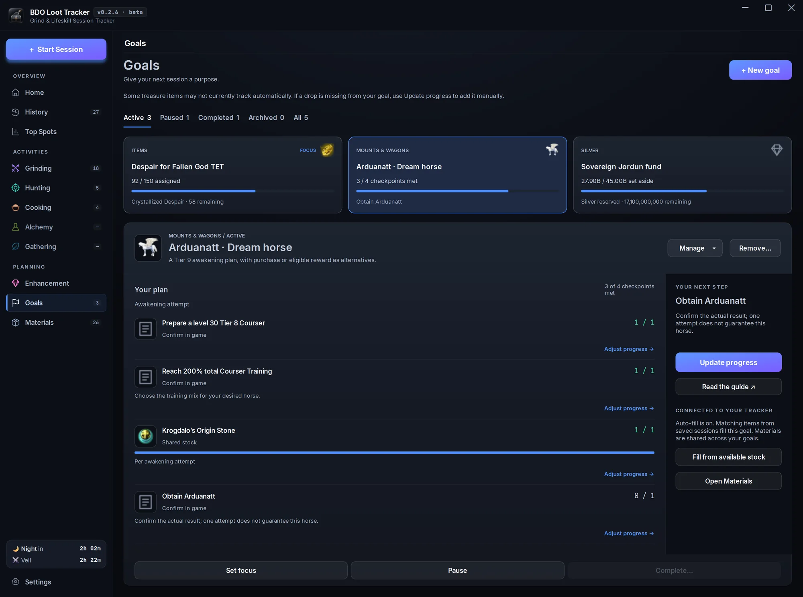
Give your next session a purpose
Pick from hundreds of ready-made plans, from treasures and dream horses to Sovereign gear and every cooking and alchemy recipe, or set your own item or silver target. Loot from the sessions you save can fill your goals automatically.
- Checklists with game art, guide links and a clear next step.
- Shares stock with Materials, so nothing is counted twice.
- Silver targets, a focus goal, pause and complete.
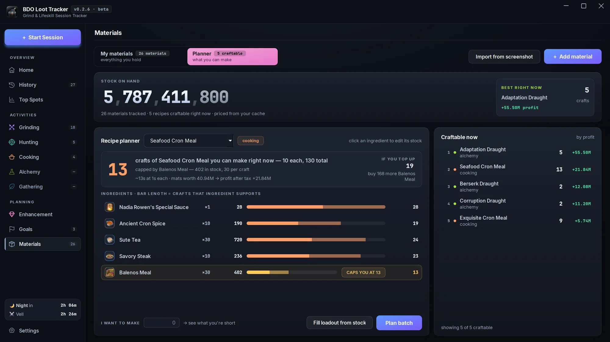
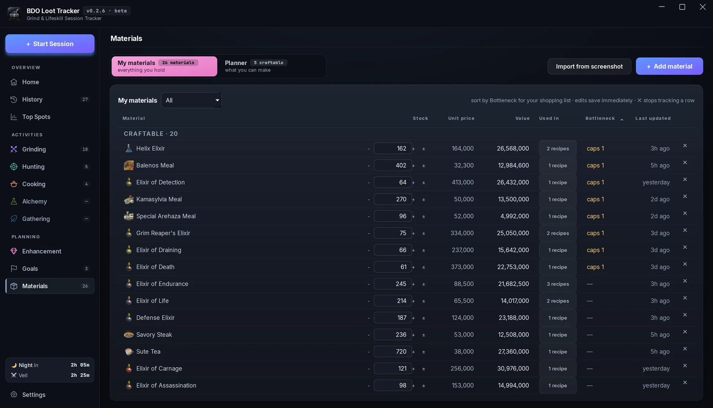
Know what your storage can make
Keep track of what's in storage and what it's worth. Type it in, or import it from a storage screenshot and review every change first. The planner shows how many of any cooking or alchemy recipe you can make now, and which ingredient holds you back.
- Craftable now ranks everything your stock can make by profit after tax.
- Say how many you want to make and get a shopping list for what you're short.
- Saving a cooking or alchemy session takes out what you used.
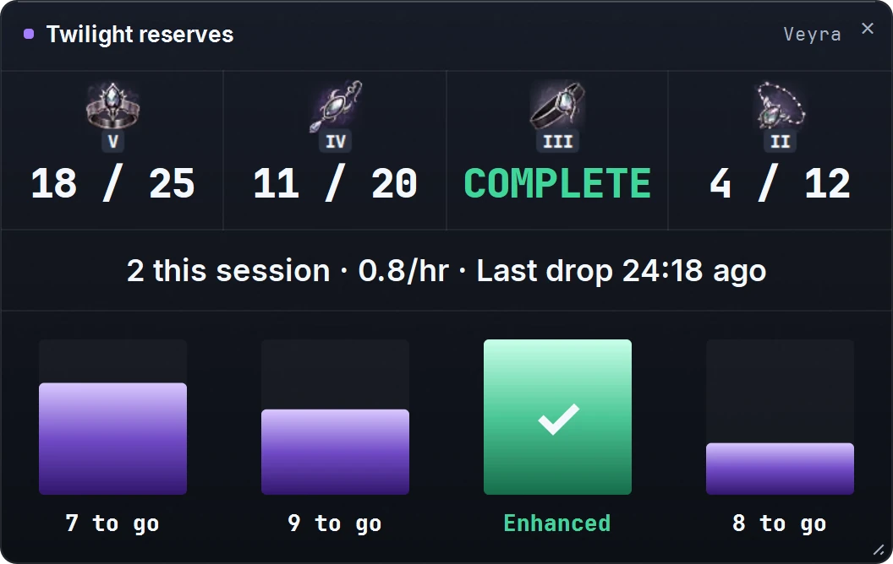
Count your Twilight pieces toward each upgrade
Saving Twilight of the End pieces for your next enhancement? The Twilight reserves overlay counts what you've stocked against the target you set for each piece, on top of your game or on your stream.
- Ring, Earring, Belt and Necklace, each at the level you're going for.
- Turn on auto-add and every Twilight the tracker counts goes on the pile.
- Optional stats: Twilights this session, per hour, and time since the last one.
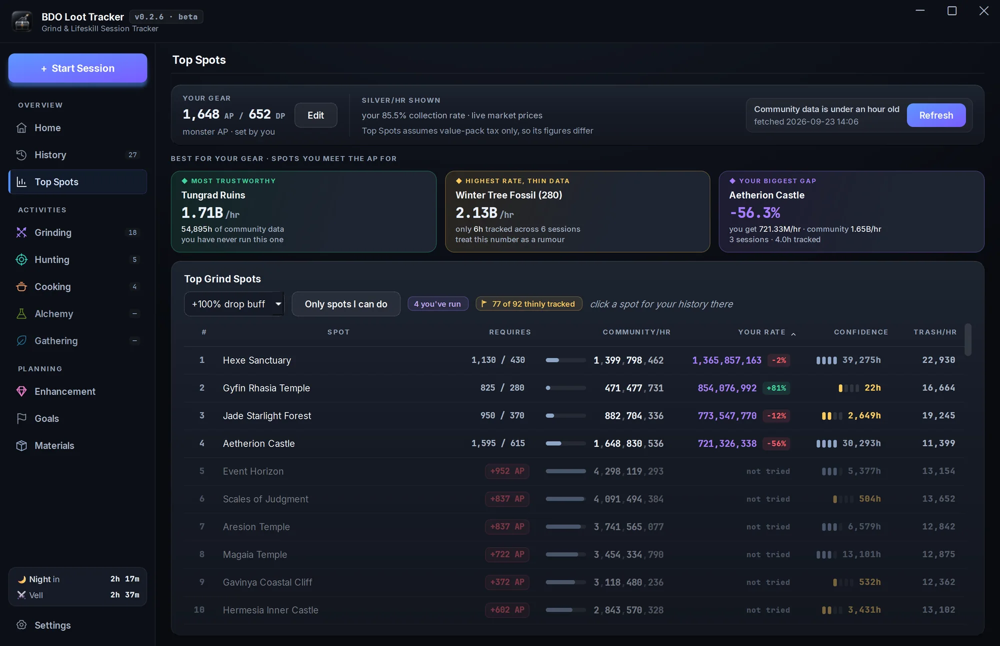
Find where to grind tonight
Top Spots ranks grind spots by community silver per hour from Garmoth's public tracker, priced at live market rates after your tax. Your own rate sits right next to it.
- Checks each spot's AP and DP against your gear. “Only spots I can do” hides the rest.
- A confidence bar shows how many hours of play back each number.
- Click a spot to see your runs there, then start a session.
Grinding, and everything else
- GrindingReads the drop log at any grind spot.
- HuntingDrop log plus the Get-All loot panel.
- GatheringMap-wide. No spot to pick.
- CookingNet profit after ingredient costs.
- AlchemyNet profit after ingredient costs.
Also in the app
- Race your bestThe live window paces your silver per hour against your best run at that spot and shows where you're headed.
- Boss and night timerA day/night countdown and the next world boss, right in the live window.
- OBS overlaysAdd the live tracker, Twilight reserves or boss timer to your stream as OBS browser sources.
- HotkeysF9 starts or stops a session, F10 pauses it. Rebind them in Settings.
- Starts itselfTurn on auto-start and a grinding run begins with your first drop. It also works out which spot you're at.
- Pause without penaltyPaused time doesn't count against your silver per hour, and it can pause itself when the drops stop.
- Fix any countEdit a quantity mid-session, add a drop it missed, or correct a run after you've saved it.
- Rare drops countIt watches the rare drop log too, so rare accessories land in your totals.
- Your market, your taxPrices from any of the nine PC regions, refreshed every hour, after your own marketplace tax.
It only looks at your screen
No hooks, no injection, nothing attached to the game. The tracker sees the same pixels you do.
Screen capture only
No game memory reads, DLL hooks or packet capture.
Runs on your CPU
Recognition runs on the processor, so your graphics card stays with the game.
Your data stays local
Sessions are saved on your PC. The app only goes online for prices, spot data and updates.
Nothing hidden
Unsure counts are marked ≈. Unknown drops stay listed instead of disappearing.
A fan-made tool, not affiliated with Pearl Abyss.
Free now, free after beta.
- Windows 10 / 11 · 64-bit
- 4K and scaled interfaces supported
- In-game drop log visible
Seeing an "unknown publisher" or download warning?
The beta installer isn't signed yet, so Edge or Windows may warn you. Only download from the GitHub Releases link above. If you want to go ahead:


The Edge steps don't apply in other browsers. Stuck? Ask in Discord.
Questions
Not answered here? Ask in Discord ↗
How does it work with BDO's anti-cheat?
It only captures your screen. It never reads game memory, hooks into the game or captures network traffic. See Safety.
Does it read my whole screen?
No. While it tracks, it reads only your drop logs, plus the Get-All loot window when you're hunting. Nothing else on your screen is read or saved. Setup takes one look at the full screen, with Interface Edit Mode open, to find those boxes, and doesn't save it.
Will it affect my FPS?
Recognition runs on your processor, not your graphics card, and it's capped at 2 CPU threads, so the game keeps the rest. A hard-to-read number now and then gets a quick extra text read on one more thread. It's built to run alongside BDO, but performance still depends on your PC, so there's no promise of zero overhead.
What do I need to get started?
Windows 10 or 11 (64-bit), BDO on the monitor you choose, and a visible drop log. 4K and other Interface Scales are supported. Guided setup detects both drop logs in Interface Edit Mode and lets you confirm or adjust their boxes. For custom fonts it can't detect, adjust the boxes by hand.
Do you upload my session data?
No. Sessions are stored on your PC. The app goes online for market prices, community spot data and update checks. If you report a problem, you choose to export and share diagnostics.
Is it going to stay free?
Yes. Free during the beta and free after it.
What can it track?
Grinding, hunting, cooking, alchemy and Gathering. Hunting combines the drop log and the Get-All loot panel. Cooking and alchemy count what you make and show net profit after your ingredient costs; unpriced byproducts stay counted.
Gathering is open to everyone, with one map-wide item list and no spot to choose: lumber, sap, ore, herbs, digging, underwater yields, blood, meat and hides. Coverage is still growing, so new items can be held for confirmation until real captures confirm them.
How do I know the counts are right?
Recognition is checked against real sessions and hand-counted inventories. Approximate quantities are marked ≈, and you can edit them to confirm. Expensive drops need solid evidence before they enter your totals. Held, unpriced and unrecognized drops stay visible for review, and grinding and hunting reports let you add a missed drop.
Which market prices does it use?
Any PC region: North America, Europe, Southeast Asia, Turkey / MENA, Korea, Russia, Japan, Taiwan or South America. Pick yours in Settings → Silver & averages, next to your marketplace tax. Prices refresh every hour.
Can I pause or pick up a stopped run?
Yes. Pause keeps your loot and stops the clock. If you stop by accident, resume the run from its review page. A just-saved grinding, hunting or Gathering run can also be continued until you start another session or close the app.
How are cooking and alchemy costs worked out?
Choose market prices, what you paid, or free for materials you gathered yourself. Plan against your stock in Materials, compare buying against crafting, and follow a shopping list. Without a material cost, the result is gross, not net profit.
How do I report a missed or wrong drop?
In the app, go to Settings → Files & diagnostics → Export Diagnostics… and post the file in Discord with the spot and roughly when it happened.